粥粥
粥粥原料
1杯燕麦
2杯水
适量的盐
方法
1. 把所有原料放入锅内，大火煮沸。
2. 调至小火，持续搅拌，直到你觉得煮好了。
你对这个食谱的第一反应也许是：“一杯水？多大一杯？”用杯子作为度量标准的食谱似乎已经过时了，但其实这是一种很聪明的描述方法，因为只要所有的原料都用杯子度量，那么杯子有多大就无关紧要了——你只需要用同一个杯子量每一种原料即可。
这类食谱强调原料用量之间的关系，而不是它们各自的绝对用量。这正是范畴论关注的问题。比起只研究事物及其固有特性，范畴论更强调事物与其他事物的关系，并以此作为将事物置于具体情境中的主要方法。
当相等不是相等时
在一般人眼中，数学可能无非就是数字和方程。而到目前为止，我已经描述了好几种非数字的数学对象，现在我们该聊聊既非数字也非代数方程的数学对象了。比如，一个含有圆形的方程到底是什么？一个含有曲面或球面的方程又是什么？
事物之间最简单明了的一种关系是相等。然而，数学中的相等是一个比我们在日常生活中使用的“相等”更为严格的概念。当我们讨论日常生活中的“相等”时，我们通常讨论的是仅从某些角度出发的相等。如果你认为男人和女人是相等的话，我猜你说的恐怕并不是二者完全一样，而也许是二者对社会的贡献相当，因而应该得到相同的对待。我们大体上可以理解这种生活用语中的相等，但偶尔也需要额外的解释。毕竟，到目前为止，关于“相等”到底意味着什么的社会争论仍然屡见不鲜。然而在数学里，我们绝对不可能接受这种模糊的说法。我们理应只用严密的逻辑进行推理，而不能引入对事物的主观解读。根据严格的逻辑规则，只有当两个事物是完完全全相同的时候，我们才能说它们是相等的。在数学里，除了我自己以外，没有什么东西和我相等。
你可能会认为这正是数学的死板之处。也许你说的没错。有时，对于消除歧义和模糊性的追求会引起人们的恼怒，因为它让某些原本有意义的事物在很大程度上丧失了其本来的意义。你很可能会因此感到挫败并决定放弃继续探索下去。事实上，也许你的确这么做了，而这就是你无法成为数学家的原因（如果你确实不是的话）。但数学家们没有在这一步放弃。他们会说，好的，这只是第一步。我们慢慢来。伴随着我们踏出的每一步，我们将越来越接近你真正想表达的意思，以及其他与之相关的同样可以消除歧义的概念。
在范畴论里，消除歧义意味着研究一些宏观的结构类型，其中相等只是一个特例。这样一来，除了约束性极强的“相等”关系，我们就可以界定其他形式的关系了。我们已经在某些情境中看到一些差不多“相同”的事物的例子了。比如，一对相似三角形并不是两个完全相同的三角形，但它们非常像。此外我们还说过，在拓扑学中，甜甜圈和咖啡杯也是“相同”的。那么等边三角形不同形式的对称之间的关系，以及排列数字1、2、3的不同方法之间的关系又是怎样的呢？在后面的一章中，我们将专门讨论关于“相同”的不同理解，但现在我们先来讨论一下总的关系，无论这种关系是相同还是不同。范畴论的一个终极目的就是阐明关于相同的那些有趣的概念，但它是从研究总的关系开始的。
范畴论所研究的关系实际上被称为“态射”（morphism），之所以创造出这样一个与众不同的用词，是因为它并不完全等同于一般意义上的关系。比如：
• 一个两行三列的矩阵可以被认为是从2到3的态射，但把它看作数字2和3之间的关系就有点儿牵强了。
• 我们会看到，从一个物体到它本身可以有很多不同的态射，但我们很难想象一个物体和它自己可以有很多种不同的关系。
有时，我们会以日常生活用词来命名数学概念，因为这符合我们的直觉，但有时我们也会创造一些特殊的名称，目的是避免数学研究被我们的直觉影响或限制。
这里是一些取自日常生活并被数学家赋予数学含义的概念名称：根、质数、有理数、实、虚、复、偏、自然、加权、滤、范畴、环、群、域。
这里则是一些并非来自日常生活，或是完全由数学家发明出来的概念名称：对数、方根、态射、函子、幺半群、张量、G-旋子（torsor）、运算数（operad）。
下面是一些范畴论会研究的关系：
• 数字谁大谁小。
• 数字之间是否能相除。
• 某些空间是否可以像一块橡皮泥那样直接变形为其他空间。
• 从一个集合到另一个集合的映射。映射是一个过程，在这个过程中，它以某个集合中的元素作为输入值生成结果，而其输出值属于另一个集合。注意，两个集合之间可能存在许多不同的映射，且该映射生成的输出值也可能有所不同。这就是为什么我们不仅要思考事物是否相关，还要思考它们以何种方式相关。
• 一个关于群之间的关系的好的定义是：一个可以通过群内元素互相结合的方式让群与群有机交互的映射。我们之后还会讨论这一点。
用一个特别的人来丈量所有的关系
关于人的“六度分隔”理论讲的是世界上任意两个人需要经过几个中间人才能建立起关系。比如，假设所有我认识的人都距离我一步之遥，那么他们认识的人就距离我两步之遥（除非我已经认识这些人了）。该理论认为，最多只需要5个中间人，你就能让世界上的任何两个人建立起联系。
一个有趣的衍生理论是将“认识的人”换成一篇论文的“共同作者”。这样一来，如果我和另外一个作者一起发表了一篇论文，在数学领域，我们二人的距离就是一步之遥。你可以根据已发表的论文将这些关系以点线图来表示，然后看看要连接起全世界所有的数学家究竟需要几个中间人。
保罗·埃尔德什是20世纪一位特立独行的匈牙利数学家。即便是在数学家这个群体中，他也算是一个乖僻的人——他的财产很少，他总是带着一只装着他全部财产的手提箱四处漂泊，用咖啡和苯丙胺来支撑他的数学研究。
他同时也是一位高产的合作研究者，事实上可能是数学历史上最高产的一位：他一生中曾与511位合作者合著过论文或专著。（作为对比，我目前只与6位合作者发表过论文。）
于是，他的朋友们想出了一个主意：将世界上所有的数学家通过中间人与埃尔德什联系起来。因此，他所有的论文共同作者就都距离他一步之遥，这些共同作者的共同作者则距离他两步之遥（排除前者已经与他共同发表过论文的情况），以此类推。他的朋友们愉快地决定，某位数学家与埃尔德什之间的距离（以中间人的人数来表示）就以“埃尔德什数”为名。所以，他的511位共同作者的埃尔德什数就是1，而有大约7000个数学家的埃尔德什数是2——也包括我。在经过了六度分隔之后，与埃尔德什有关联的研究者已经有25万人了，其中除了数学家，还有统计学、天文学和遗传学等领域的研究者。
这个例子与范畴论的一个重要概念有关。一旦你决定了要研究哪种关系，你就可以试着思考这个系统中是否存在一个“特别的物体”，其本身就包含了成千上万条重要的信息，就像一个诸如晴雨表、试金石或者埃尔德什这样的基准物。数学家将此类事物称为“泛性质”（universal property）。
通过这类事物与其他事物的关系来定义它们自身，这个问题我们实际上已经探讨过了。
• 数字0是唯一一个具有其他数字加上它而不发生改变这一特性的数字。
• 数字1是唯一一个具有其他数字乘以它而不发生改变这一特性的数字。
• 空集是所有集合中最小的集合。
• 之后我们会发现，空群是不存在的，所以所有群中最小的群是只有一个元素的群。
我们接下来会看到，范畴论把这些定义进行了推广。
用图像的方式强调关系
家谱是用连线的方式把人与人之间的关系清晰地表示出来的一种有效方法。大略地讲，家谱包含两种线——横线表示兄弟姐妹的关系，竖线表示父母子女的关系。还有一些家谱可能会用另外一种线型或符号表示婚姻关系。当整个家族的成员越来越多、形式越来越多样化时，家谱就会变得越来越复杂，你可能会在家谱中看到再婚、同父异母或同母异父的兄弟姐妹、继父或继母的孩子，等等，更不要提堂表亲结为夫妻的情况了。
画家谱可以帮助我们理解与“表亲”有关的那些略显复杂的亲戚关系概念，比如“第二代远房表亲”（second cousin once removed，就字面意义而言指的是与你有同一位曾祖父的、与你差一代的亲戚）。
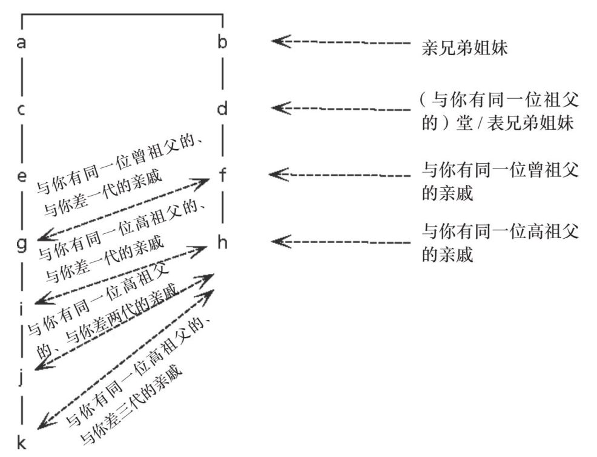
这种家谱式的关系描述方式也可以应用于其他并不是家族，但与家族有相似性的情境。我的钢琴老师没有自己的孩子，但她总说她的学生就像她的孩子一样。实际上，她是一个非常有影响力的导师，而作为她的学生，我们在钢琴比赛、大师班学习和她的课堂这几个方面都有着很相似的经历，因而我们的关系多少有些像兄弟姐妹。我把我的钢琴课同学看作我在“钢琴上的兄弟姐妹”。我与他们始终保持着一种亲密的关系，并且这种关系一直延续到今天。我们的钢琴老师不只教授音乐，她也向我们传授她所秉持的价值观和原则，就像我们的父母一样（或者至少，像父母应该做的那样），因此就价值观而言，我和我在钢琴上的兄弟姐妹是大致相同的。即使是那些年龄比我大上很多或者小上很多，从未与我一起上过她的课的学生，我仍然认为我与他们有一种情感上的联结。
钢琴领域的家谱可能比真正的家谱更缺乏对称性，因为此家谱上的人要么没有钢琴学生（如果他们自己不从事钢琴老师这个职业的话），要么就有一大群钢琴学生（如果他们当上了钢琴老师的话）。这跟一般的家族家谱形成了鲜明的对比，因为大部分人都只有少数几个孩子，没有或者有太多的情况不太常见。但即便如此，追溯我的钢琴上的祖先还是一件很有趣的事：我的钢琴上的曾祖母是克拉拉·舒曼，作曲家罗伯特·舒曼的妻子。这其实比我能够回溯的家族家谱更久远，因为我完全不知道我的曾祖父母是谁。
至少在数学家之间，关于数学的家谱是大家都非常熟悉的。事实上，有人创建了一个关于数学家谱的网站，这个家谱试图追溯世界上所有数学家之间的“亲缘关系”，你可以任意指定一位数学家，让网站生成一个与这位数学家有关的家谱。在数学领域，当你拿到数学博士学位的时候，你就被视为“出生”了。你的“父母”就是你博士阶段的导师。就像我和我的钢琴老师一样，这也代表了一种亲缘关系。很多博士生导师，至少其中那些不错的导师（比如我的导师）在学界都很有影响力，而他会成为你的良师益友。他们不仅会指导学生写博士论文，而且会引导、影响学生的思维方式和行为方式，至少是在学术研究这方面。当我见到我“新出生的”数学领域的兄弟姐妹时，我总能感觉到与他们之间的某种联结，就像我与我在钢琴上的兄弟姐妹一样，也许这种感觉和初次见到失散多年的兄弟姐妹差不多吧。
说回之前的话题，当我尝试着查询关于我自己的数学家谱时，我发现我能追溯到的祖先比我真正的家族家谱更久远：我在数学上的曾祖父是阿兰·图灵，“二战”时期一位伟大的密码破解家，不幸的是，他因同性恋被起诉，在去世前遭受了许多折磨，直到2013年才得到了一份迟到太久的赦免。
范畴论也会用图表来表示关系，这种图表就类似于家谱、航线图、街道地图，以及我们之前提到的关于数字30的因数的“格子图”。这种图表化的表达通常而言是经过大幅简化的，但我们在进行抽象化讨论时常常会遇到这种情况——一些重要的细节被舍弃了。像往常一样，我们的目的是凸显那些我们更感兴趣的特点，在范畴论中则是一些特定的关系，并借此将这些特点或特定的关系置于不同的情境中做对比。
范畴论通过箭头来表示关系，以展示某个情境的结构特点。箭头表示我们正在研究的某个特定数学领域的某种关系，我们可以用很多箭头来表示两个事物的多重关系。这种方法最强大的地方在于，它将所有的事物都几何化了，这就意味着我们可以运用人类另一个重要的认知功能——视觉思维来思考。
实际上，当我们在观察像家谱一样的图表时，我们更多地是用拓扑学的方式而不是用几何学的方式去观察。我们往往并不关心箭头的形状，只关心它们的起点和终点。就像坐地铁时，你通常并不关心地铁在地下行驶的路线，你只需要在指定的站台上车和下车就可以了。
这种方法带给我们的启发是惊人的。我们在接下来的部分会用到许多图表，而它们与家谱的相似性会越来越小。以下是范畴论中的一些经典图表，我们稍后会详细探讨它们的含义。
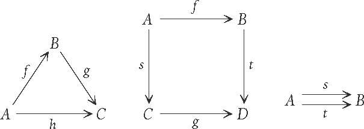
双向关系还是单向关系
你也可以画一张你与你朋友的关系网络图。你可以先在纸上用一个点来表示你的每一个朋友，如果他们彼此是朋友的话，你就可以用一条线段把他们连接起来。你也许很快就会遇到一些有趣的问题：
• 每个人都是他自己的朋友吗？（或者，每个人都是他自己最大的敌人？）
• 如果某人是你的朋友，那你必须也是他的朋友吗？
• 你朋友的所有朋友一定都是你的朋友吗？（脸书就认为答案是肯定的。）
如果你对第二个问题的答案是否定的话，那么这条用来连接两个点的线段最好换成箭头，这样你就可以用箭头指向的不同方向来区分你是他人的朋友与他人是你的朋友这两种关系了。就像这样：
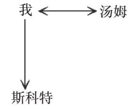
在这张图中，我是汤姆的朋友，汤姆也是我的朋友。我是斯科特的朋友，但斯科特并不是我的朋友。（也许我对斯科特很友好，但他对我并不友好。）
一旦你画好了这张图，一些特性看起来就一目了然了。
• 如果你没有朋友，你就会是白纸上一个孤立的点。
• 如果你很受欢迎，那么代表你的那个点就会发散出很多条线。
第二点在示意图中会明显地体现出来，因为那些与你联结在一起的人自己并没有发散出那么多条线。
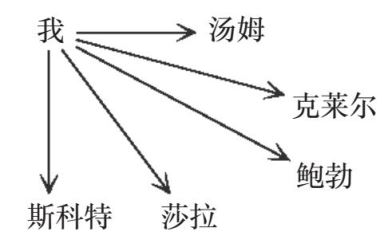
如果你身处一个联系非常紧密的朋友圈里，那么代表这些朋友的点之间就会有各种方向的箭头将彼此连接起来：
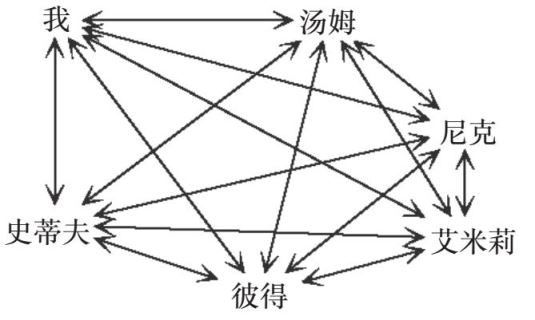
范畴论很看重这种图表，但也给这种图表能表示的关系加上了一些限制条件。这些关系与上面列出的问题不尽相同，但的确相关。上述关于友谊的三个问题与一个十分重要的表示关系的概念有关，这个概念就是“等价关系”。等价关系是一个十分明确、清晰的概念，因为它们总是遵从三条法则。在上述关于友谊的例子里，等价关系对应的是对上述三个问题的答案均为“是”。
第一条法则是“自反性”（reflexivity），也就是每个事物都与它们自己相关联。第二条法则是“对称性”（symmetry），也就是说，如果A与B相关联，那么B也与A相关联。第三条也是最后一条法则是“传递性”（transitivity），这一点我们在之前的章节已经讨论过了。这条法则是说，如果A与B相关联，并且B与C相关联，那么A与C相关联。
等价关系的一个例子是相似三角形。我们已经知道，相似三角形就是有相等角度的内角，但不一定有相等长度的边的一组三角形。现在我们可以用上述三条法则检验一下。
1. 每个三角形的内角度数都和它本身的内角度数相等，所以每个三角形和它本身都是一对相似三角形。
2. 如果三角形A与三角形B相似，则A与B有相等的内角，那么B也与A有相等的内角，所以B也与A相似。
3. 如果三角形A与三角形B相似，则A和B有相等的内角。如果三角形B和三角形C相似，则B和C有相等的内角。那么A和C也有相等的内角，所以三角形A与三角形C相似。
一个更基本的（听起来像是将法则重复了一遍的）关于等价关系的例子是相等。我们可以再次运用这三条法则来检验。
1. 不管我们谈论的是何种事物，总有A=A。
2. 如果A=B，那么B=A一定成立。
3. 如果A=B且B=C，那么A=C一定成立。
知道相等也属于等价关系是一件好事，因为如果我们要讨论更广泛的关系概念的话，我们最好确保那些简单基础的关于相等的概念也被包含在内。因为这意味着，等价关系是相等关系的一种推广。我们将会看到，范畴论所讨论的关系远不止等价关系。这是因为数学对象之间的很多关系并不像等价关系这样简洁、明确，但我们仍然希望好好地研究它们。
知道什么时候应该让事物顺其自然
我的书桌看起来总是很杂乱，但我知道所有的东西都在它们应该在的位置——反正我是这么想的。我允许我那一大摞参考论文以及大把的钢笔和铅笔（我的桌上至少有100支笔）以对它们而言最自然的方式占用空间。不过有些时候，我仍然不得不做一番整理，这通常是因为我的“书桌”其实就是我的餐桌。所以如果我的朋友来我家吃饭的话，我就必须把它清理干净。在这种时候，我会试着把所有的论文摞成一摞或者几摞。一旦它们被摞成一摞，它们看起来就没有那么杂乱，也很容易被搬来搬去了，但我认为，这种做法破坏了它们最“自然”的几何形态。我会更难从那一摞参考论文里面找到我需要的论文，因为它们被排成了一列，改变了各自本来的位置，当它们在我的“书桌”上被散乱地到处摊开的时候，我总能知道我想找的东西在哪里。
这是关于数学的自然几何形态的一个重要方面，也正是范畴论所做的事。范畴论将一个抽象的关于“关系”的概念变成了一个可视的概念，一个“地图”上的箭头或其他类似的实物性的描绘。这种视觉表达甚至不限于二维图形，还可以是三维图形。
大部分人所知道的代数形式似乎都是一排又一排的符号表达，就像一摞摞整理得很规整的论文：
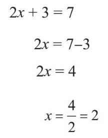
然而，如果我们处理的是事物之间更复杂微妙的关系，而且这些事物并不“想”被排列成直线的话呢？它们可能有一种对其本身而言最自然的几何形态，而范畴论的重要特点之一就是它允许事物以它们本来的自然形态存在。
以下是一个写成方程式的代数表达式：
xC. By. zA=Az. yB. Cx
这个方程式的含义很难看出来，但其实它有一个与立方体表面有关的自然几何形态。其中小写字母表示的是立方体的表面（在下图中用双箭头标明），大写字母表示的是立方体的边（在下图中用单箭头标明）。整个表达结构在范畴论里有一个确切的含义，虽然就目前而言很难简单地解释清楚。不过，也许你能从这个例子中认识到，将写成一个简洁的方程形式的代数表达式转变为一个包含立方体形状的图形表达式需要遵循哪些法则。
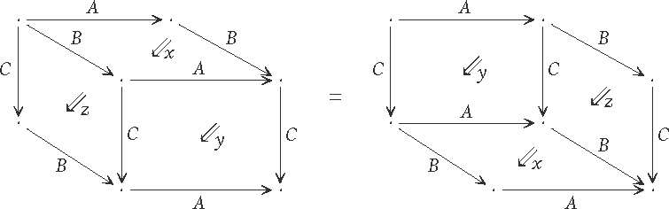
这个表达式真的很像一本关于如何用小的部件组装成一个大型结构的说明书，在这里，长方形的表面和它长而细的边就是那些部件。如果你拿到了标为x、y、z的长方形表面，你也许有很多种方法把它们组装成一个长方体。一旦你把C边这个部件装到x面这个部件的一角上（你可以称之为xC），并且把B边这个部件装到y面这个部件的一角上（你可以称之为By），那么你就只有一种方法将这两个组合好的部件拼成一个长方体。zA部件及其他类似的组合部件同样适用于上述规则。
实际上，这个表达式还有其他的自然几何形态，比如以如下所示的“线”为部件的形态：
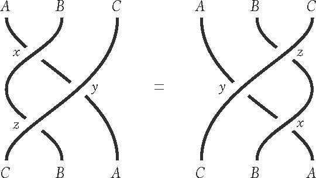
要解释这些线是如何与立方体的部件一一对应起来的就更困难了，但也许你能直接看出等式左边的线状图和等式右边的线状图是“一样”的，因为假如这些线真的是两端被固定住的绳子的话，那么你直接用手拨一拨它，就能让它从左手边的图案变成右手边的图案。这类图在数学中被称为“辫”（braids），因为它们看起来很像是梳成辫子的头发。历史上的一些数学争论最终就被归结为用我们刚刚说的“手指拨动”检验两个辫是否相同的问题。
上述关于立方体和线的图形表达式都是高维范畴论的典型计算。即便是那些十分资深的范畴论学者对于哪种图形更加清晰明了也并未达成共识。
这类图表是范畴论的一个重要特征，尤其是那些带有箭头的图表。即便你只是用箭头画了一个正方形，就像这样：
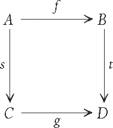
任何一位纯数学家也能认出它很可能出自范畴论。
有一个理论认为数学有三个分支：代数、几何和逻辑。广义上讲，代数是关于符号的，几何是关于形状和位置的，逻辑是关于提出有关事物的论点的。这个理论认为，所有的数学家都位于这个三角形的某条边上的某处：
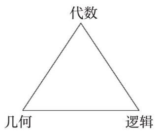
但范畴论似乎包含了所有这三种数学对象——它探讨的是论点的结构，并且它以几何的方式研究代数。
在一张地图上表示不同类型的道路
一张街道地图在某种意义上就是一张表示各个地点之间关系的图表。这里的“关系”指的就是“从A地到B地的方法”。如果一张地图画得很详细，那么它可能就会标注出哪些道路是单行道，这样的话，从A到B的路线就不一定是可逆的了。
如果一张地图真的画得十分详细的话，那么它可能还会标注出哪些道路是自行车道。在这种情况下，从A到B的某条路线既有可能是汽车和自行车共用的，也有可能是只适合其中一种交通工具的。这张地图也可能会标注公交车道、电车道和人行道。当然，人行道不大可能具有方向性。（不过在某些地铁站内，人行道的确有可能是单向的，比如伦敦市区的中央线和北线的中转站——银行站，在这个地铁站内，上行和下行的螺旋楼梯就是完全分开的。）
所有这些地图标注汇总起来所描述的城市道路，更多的是关于如何从一个地方去往另一个地方，而非关于每样事物在什么地方。它更强调的是事物之间的关系，而不是事物本身，就像范畴论一样。这种结构的一个重要属性是，事物之间可以有多种不同形式的关系。而且，这种关系不一定是对称的，也就是说，从A到B的路线不一定可逆，因为可能存在单行道之类的限定规则。这就使得它与我们之前提到的等价关系有所不同。范畴论中的关系仍然具有自反性（事物与它们自己相关）和传递性，但并不一定具有对称性，并且现在我们又见识了一种新的特性，即事物之间可以有多种不同形式的关系。
下面这个图表描绘了一个很小的范畴：
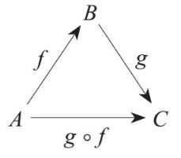
在这里，f就相当于从A到B的一条路线，g就相当于从B到C的一条路线。g ° f就是我们用来表示从A到C途经B，即先走f再走g这条路线的简化符号。（把f放在g的右边是有数学上的原因的，在此我就不多解释了。）
这就像是一张从伦敦出发经过唐卡斯特到达谢菲尔德的火车路线图，从地理学的角度看，为了让这张图更符合实际情况，它应该画成这样：
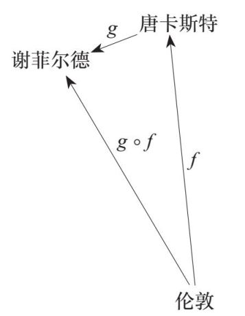
不过从数学的角度看，这两张图并没有实质性差别。这张图告诉我们，有一列火车从伦敦开往唐卡斯特，还有一列火车从唐卡斯特开往谢菲尔德。你可以先乘坐前一列火车，再乘坐后一列火车从伦敦去往谢菲尔德。这些箭头并不代表火车实际行驶的路线，而是指存在一条从伦敦到谢菲尔德的路线这个抽象事实。
在下一张图里，我们在伦敦和谢菲尔德这两点之间增加了一个箭头，因为实际上从伦敦到谢菲尔德是有直达火车的，你可以不必在唐卡斯特转车。
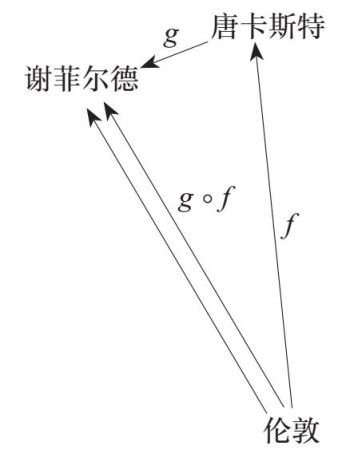
这张图表明，现在从伦敦到谢菲尔德有两条路线。一条是包含两列火车的“整合”路线，另外一条则不涉及整合的问题。在范畴论中，或者说在整个数学领域，这种先做一件事然后再做另一件事的过程被称为“复合”（composition）。
你也许注意到了，我们并没有画出这张地图上的所有路线。比如，你可以什么都不坐就从伦敦到达伦敦，这类似于关系的自反性。类似地，你也可以从谢菲尔德到谢菲尔德，以及从唐卡斯特到唐卡斯特。我们可以用迷你箭头把这些关系也标注出来：
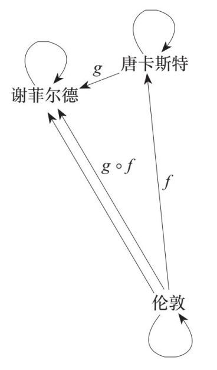
但这种标注好像没什么意义，因为它们太显而易见了。
在本章的末尾，我们将会给这些关于关系和画箭头的观点一个正式的总结。
就像我们在第8章里定义群一样，我们也可以通过公理化来定义范畴。我们需要知道范畴的基本构成元素是什么，以及把它们组合起来的规则是什么。
在数学里，一个范畴最基本的形式是一个集合里的元素以及这些元素之间的一组关系。但我们现在已经知道，范畴论所研究的关系不一定具有对称性，所以我们需要改变一下我们的描述方式，说明这一不同之处。因此，我们不再说“A和B之间的关系”，而是说“从A到B的关系”，以强调这是一种单向的关系。事实上，在范畴论中，我们有时会用“从A到B的箭头”来进一步强调这种方向性，并提醒我们自己我们是用包含箭头的图示来有效地表示这些关系的。我们也会使用“态射”这个词，因为有时候这种关系更像是一种事物到另一种事物的连续变化，就像从甜甜圈到咖啡杯的连续变化一样。
现在我们来阐述一下范畴论中的关系必须遵循的法则：
1. （第一条规则略微类似于传递性。）如果有箭头
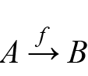
，以及箭头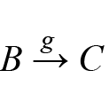
，那么二者的结合一定会得到一个复合箭头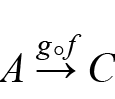
。2. （第二条规则略微类似于自反性。）如果有一个物体A，那么一定有一个“恒等”箭头
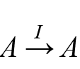
，使得对于任意箭头，f°I=f且I°f=f。3. 如果有三个箭头、、
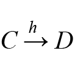
，我们就可以创造出多个不同的复合箭头，但它们都遵循：
（h ° g）° f = h °（g ° f）
这些原则也许会让你想起群的公理，对于群，我们也有一个“什么都不做”的元素，以及一个把元素组合起来的规则。而在这里，我们组合的不再是物体，而是它们之间的关系。这是一个信号，表明我们已经在讨论一种更高层面的抽象或推广——每样事物都提升了一个维度。转换层面或升降维度是范畴论中经常发生的一种情况，我们在维度那一章会做进一步的探讨。这类讨论可能会让你感觉自己的大脑即将向内或者向外爆炸，或是扭曲成了像莫比乌斯环那样奇怪的形状。事实上，数学家有时称这类讨论为思维上的“瑜伽”。在下一章，我们将讨论当我们像这样完全改变自己的思维方式时，我们就会得到一个全新的看待事物的方式。
以下是一些关于范畴的简单示例。有一个很小的范畴是这样的，它只包含一个元素和一个箭头。因为只包含一个箭头，所以我们知道它一定是恒等箭头。我们可以给这个小范畴画一张图：
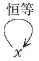
我们可以称这个唯一的元素为x或y或者弗雷德，或者其他任何名字，这并不重要，因为它们并不会改变这张图。你也许会觉得这就是最小或者最傻的那个范畴，但其实还存在更小的范畴，就是没有元素也没有箭头的范畴，因此我们也无法把它画出来。注意，不存在有一个元素但没有箭头的范畴，因为根据之前提到的第二条法则，任何元素都有一个恒等箭头。
另一个范畴是这样的，它包含一个不是恒等箭头的箭头，这个范畴画出来是这样的：
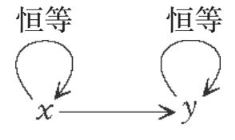
你也许会觉得把恒等箭头画出来好像没什么意义，因为它们总是存在的。因此我们在实际操作中通常不把它们画出来，这样就可以节省一些空间。因此对于上面这个范畴，我们一般这样画：
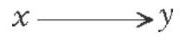
这里的x和y可以是集合，而从x到y的态射可以是一个函数。x和y也可以是群，那么从x到y的态射就可以是一个与群运算有良好互动的映射。x和y还可以是拓扑空间，那么从x到y的态射就可以是从一种空间到另一种空间的态射。然而，就像我们在代数中将所有的东西都变成了x和y一样，这里的x和y也并不是某个特定的集合或群或空间。如果说在代数方程中，x是一个潜在的数字，那么在范畴论中，x就是一个潜在的集合或群或空间或其他什么，这就是为什么我们只能称它为某个“物体”。
下图表示的也是一个范畴，其中的一些箭头可以被复合：
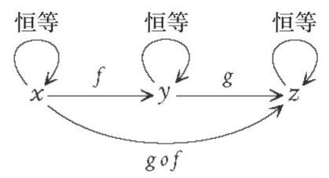
但事实上，我们不仅不需要画出恒等箭头，我们也不需要画出复合箭头g ° f，因为我们知道它一定存在。这些省略都是为了提高图表的表示效率，避免杂乱，使其更加易读。因此我们通常会这样画这张图：
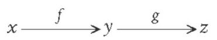
很快我们就会看到这种“去杂乱”的做法和我们在研究30的因数时简化格子图的方法十分类似。
我们现在可以试着理解我们在第2章描述过的那种令人感觉十分困惑的最后一步抽象过程。它是关于“一个元素的范畴”的。如果一个范畴只有一个元素，那么它所有的箭头都起始和终结于同一个点，虽然这些箭头不一定是恒等箭头：
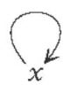
比如，x可能是所有整数的集合。关于整数，我们有很多并不能得到与之恒等的另一个集合的函数，比如给每个数加1的函数，或是给每个数乘以10的函数，这些函数的输出值集合是整数集合的子集。
在一个只有一个元素的范畴里，任何箭头都是可复合的，因为箭头的头和尾总是相接的。因此这个单一的元素不能给我们任何信息，我们也就不必再管它了。而对于这个范畴来说，其所有箭头组成的集合相当于一个元素可以相乘但不一定能相除的集合，就像自然数一样。这样的集合也被称作“幺半群”（monoid），于是现在我们终于了解了“一个只有一个元素的范畴就是一个幺半群”这个概念。
我们可以创造一个所有元素都是自然数的范畴，并且规定当a≤b的时候，总有箭头a→b。所以我们会有这样的箭头：
1→2→3
以及这些箭头的复合箭头：
1→3
这是一种特殊的范畴，其中，对于任意两个元素，它们之间有且只有一个箭头。因为对于任意两个自然数a和b，只存在a≤b和b≤a两种可能。只有当a=b时，二者才能同时成立，而在这种情况下，我们就有一个从a指向a的恒等箭头。而根据我们之前提到的绘图原则，我们不必画出复合箭头或恒等箭头，所以这个范畴可以被表示为：
1→2→3→4→5→6→……
我们看到，所有的数字都排成了一行，就像我们期待的那样。类似这样的范畴也被称为“全序集合”（totally ordered set），因为所有的元素都是按顺序排列的。你能看出为什么我们不能用“＜”而必须用“≤”吗？因为如果用“＜”代替“≤”的话，我们就没有恒等箭头了。范畴论的法则要求箭头可以从一个物体出发回到它本身，但我们不能说1＜1，所以这是不成立的。事实上，对于任何数字，我们都不能说n小于n。
另外一个关于数字的范畴是我们讨论过的30的因数。假设a为b的因数，则存在一个箭头从a指向b。这样我们就可以画出下面这张图：
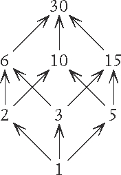
如果我们把所有的复合箭头也画出来的话，我们就会得到我们之前看到的那张杂乱的图：
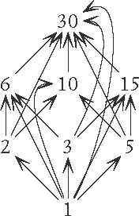
因此我们看到，运用范畴论的一些方法能让我们更清晰地了解事物的结构，因为它让我们的关系表示图更简洁了。这是范畴论的基本目的之一——“清理”我们的思考过程，提取最关键的结构。这种由物体和箭头组合而成的优雅结构带来的无穷可能性实在令人惊叹，它在很大程度上激发了我们用新的方式思考问题的灵感。以下是一些能够用下面这个极为简单、无害的，只包含两个元素和一个态射的图示来表示的众多概念：
x→y
• 两个数字，以及一个不等关系（＜或＞或≤或≥）。
• 两个数字，其中一个可以被另一个整除。
• 两个集合，以及一个从一个集合到另一个集合的函数。
• 两个集合，其中一个完全被另一个包含。
• 两个群，以及一个从一个群到另一个群，并且与群结构（群运算）有良好互动的映射。
• 两个空间，以及一个从一个空间到另一个空间的态射。
• 空间里的两个点，以及一条把它们连起来的路径。
• 空间里的两条线，以及一个把它们连起来的曲面
• 位于左边的一对数字，位于右边的一个数字，以及一个关于忘记了左边的其中一个数字于是只剩下另一个数字（右边的数字）的过程。
• 两个逻辑命题，以及一个可以借助逻辑从一个命题推导出另一个命题的证明过程。
就目前而言，将这些情境表示为一个简单的图示似乎并没有达到什么特别的效果。但这仅仅是范畴论的起点。我们可以做的下一步是把图表搭建起来，看看这些箭头和互动会构成怎样的更复杂的图形。这将是我们下一章的主题。